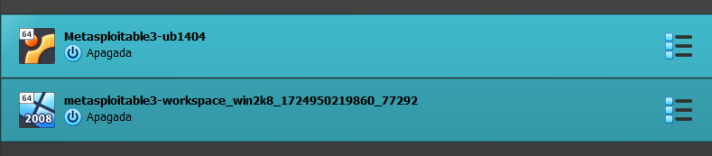
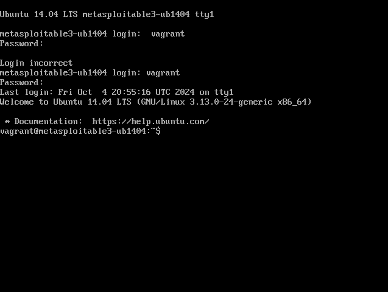

1. Primero debemos descargar Vagrant y virtual Box desde su pagina oficial para nuestro sistema operativo y aceptar todos los permisos que te piden para una instalacion correcta


2. Una vez instalados ambos tendremos que inicar sesion en Github y buscamos el apartado rapi7/metasploitable 3 y buscar la forma de instalacion para usuarios de Windows
Metasploitable3 es una máquina virtual que se creó desde cero con una gran cantidad de vulnerabilidades de seguridad. Está pensada para usarse como objetivo para probar vulnerabilidades con metasploit. Metasploitable3 se publica bajo una licencia de estilo BSD. Consulte COPIA para obtener más detalles.
mkdir metasploitable3-workspace
cd metasploitable3-workspace
Invoke-WebRequest -Uri "https://raw.githubusercontent.com/rapid7/metasploitable3/master/Vagrantfile"
-OutFile "Vagrantfile"
vagrant up
Luego de eso tardara un aproximado de 15 a 20 minutos para terminar el proceso de creado de las maquinas virtuales tanto como la de Windows como la de Ubuntu
3. Al finalizar este proceso, procederemos a entrar a Oracle Virtual Box y ya deberian estar ambas creadas, entraremos primero a la maquina virtual de Ubuntu que al iniciarla nos pedira logiarnos con un usuario y contraseña que sera la misma ¨vagrant¨
4. Una vez iniciado sesion tendremos que hacer un ¨sudo apt-get update¨ y luego un ¨sudo apt-get upgrade¨ para la actualizacion de listas de paquetes y directorios
5. Para la maquina virtual de Windows tambien nos pedira iniciar sesion en cualquiera de los dos Usuarios ya sea en Administrador o en Vagrant la contraseña seguira siendo la misma ¨vagrant¨